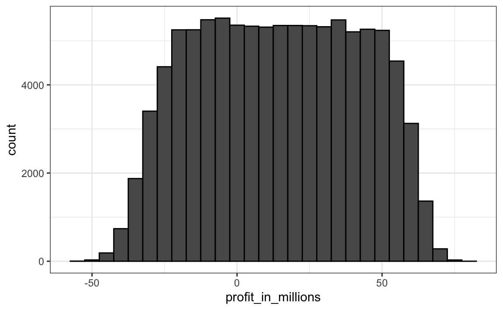

Capítulo 14 Variáveis aleatórias
Na ciência de dados, geralmente trabalhamos com dados que são afetados de alguma forma pelo acaso. Alguns exemplos são dados provenientes de uma amostra aleatória, dados afetados por um erro de medição ou dados que medem algum resultado de natureza aleatória. Ser capaz de quantificar a incerteza introduzida pela aleatoriedade é um dos trabalhos mais importantes dos analistas de dados. A inferência estatística oferece uma estrutura para fazer isso, assim como diversas outras ferramentas práticas. O primeiro passo é aprender a como descrever matematicamente variáveis aleatórias.
Neste capítulo, apresentamos variáveis aleatórias (random variables) e suas propriedades, começando com sua aplicação em jogos de azar. Em seguida, descrevemos alguns dos eventos relacionados à crise financeira de 2007-200851 usando a teoria da probabilidade. Essa crise financeira foi causada em parte pela subestimação do risco de certos títulos vendidos por instituições financeiras. Especificamente, os riscos de títulos hipotecários e as obrigações de dívidas com garantias foram amplamente subestimados. Esses ativos foram vendidos a preços que presumiam que a maioria dos proprietários pagaria pontualmente, e a probabilidade de que isso não ocorresse foi calculada como baixa. Uma combinação de fatores resultou em muito mais inadimplências do que o esperado, levando a uma queda nos preços desses títulos. Como consequência, bancos perderam tanto dinheiro que precisaram de ajuda do governo americano para evitar o fechamento completo.
14.1 Variáveis aleatórias
Variáveis aleatórias são os resultados numéricos de processos aleatórios. Podemos facilmente gerar variáveis aleatórias usando alguns dos simples exemplos que mostramos anteriormente. Por exemplo, vamos definir X igual a 1 se uma bola for azul ou igual a 0 caso seja vermelha:
bolas <- rep( c("vermelho", "azul"), times = c(2,3))
X <- ifelse(sample(bolas, 1) == "azul", 1, 0)Aqui X é uma variável aleatória: toda vez que selecionamos uma nova bola, o resultado muda aleatoriamente. Veja abaixo:
ifelse(sample(bolas, 1) == "azul", 1, 0)
#> [1] 1
ifelse(sample(bolas, 1) == "azul", 1, 0)
#> [1] 0
ifelse(sample(bolas, 1) == "azul", 1, 0)
#> [1] 0Às vezes é 1 e às vezes é 0.
14.2 Modelos de amostragem
Muitos procedimentos de geração de dados, aqueles que produzem os dados que estudamos, podem ser modelados relativamente bem como se estivéssemos sorteando de olhos vendados elementos em uma urna. Por exemplo, podemos modelar os votos de eleitores americanos como 0s (para eleitores do partido republicano) e 1s (para eleietores do partido democrata) em uma urna que contém os códigos 0 e 1 para todos os prováveis eleitores. Em estudos epidemiológicos, geralmente assumimos que os sujeitos de nosso estudo são uma amostra aleatória da população de interesse. Os dados relacionados a um resultado específico podem ser modelados como uma amostra aleatória de uma urna contendo o resultado para toda a população de interesse. Da mesma forma, na pesquisa experimental, geralmente assumimos que os organismos individuais que estamos estudando, como por exemplo, vermes, moscas ou ratos, são uma amostra aleatória de uma população maior. Experimentos aleatórios também podem ser modelados como o sorteio de uma urna, considerando a maneira como os indivíduos são designados para grupos: quando designados, o grupo é escolhido aleatoriamente. Os modelos de amostragem são, portanto, onipresentes na ciência de dados. Jogos de cassino oferecem uma infinidade de exemplos de situações do mundo real em que modelos de amostragem são usados para responder a perguntas específicas. Portanto, começaremos com esses exemplos.
Suponha que um cassino muito pequeno o contrate para ver se eles devem incluir jogos de roleta. Para simplificar o exemplo, assumiremos que 1.000 pessoas jogarão e que o único tipo de aposta que podem fazer na roleta é apostar em vermelho ou preto. O cassino quer que você preveja quanto dinheiro ganharão ou perderão. Eles querem uma gama de valores e, em particular, querem saber qual é a probabilidade de perderem dinheiro. Se essa probabilidade for muito alta, eles não instalarão jogos de roleta.
Vamos definir uma variável aleatória \(S\) que irá representar o total de ganhos do cassino. Vamos começar construindo a urna. Uma roleta tem 18 posições vermelhas, 18 posições pretas e duas verdes. Portanto, jogar uma cor em um jogo de roleta é equivalente a escolher desta urna:
color <- rep(c("Preto", "Vermelho", "Verde"), c(18, 18, 2))Os 1.000 resultados de 1.000 pessoas jogando são eventos independentes desta urna. Se o jogador apostar no vermelho e o resultado for vermelho, o jogador ganha e o cassino perde um dólar, então obtemos -$1. Por outro lado, se o jogador apostar no vermelho e o resultado for preto, o casino ganha um dólar e obtemos $1. Para construir nossa variável aleatória \(S\), podemos usar este código:
n <- 1000
X <- sample(ifelse(color == "Vermelho", -1, 1), n, replace = TRUE)
X[1:10]
#> [1] -1 1 1 -1 -1 -1 1 1 1 1Como sabemos as proporções de 1s e -1s, podemos simular os resultados da roleta com uma linha de código, sem a necessidade de definir a cor (color):
X <- sample(c(-1,1), n, replace = TRUE, prob=c(9/19, 10/19))Chamamos isso de modelo de amostragem, pois estamos modelando o comportamento aleatório da roleta com a amostragem das opções disponíveis. O ganho total de \(S\) é simplesmente a soma desses 1.000 eventos independentes:
X <- sample(c(-1,1), n, replace = TRUE, prob=c(9/19, 10/19))
S <- sum(X)
S
#> [1] 2214.3 A distribuição de probabilidade de uma variável aleatória
Se você executar o código acima, verá que \(S\) muda sempre. Isto é porque \(S\) é uma variável aleatória. A distribuição de probabilidade de uma variável aleatória nos diz a probabilidade de que o valor observado caia em um determinado intervalo. Por exemplo, se queremos saber a probabilidade de perdermos dinheiro, estamos perguntando a probabilidade de que \(S\) estar no intervalo \(S<0\).
Observe que se pudermos definir uma função de distribuição cumulativa \(F(a) = \mbox{Pr}(S\leq a)\), então podemos responder a qualquer pergunta relacionada à probabilidade de eventos definidos por nossa variável aleatória \(S\), incluindo o evento \(S<0\). Chamamos isso de função de distribuição da variável aleatória.
Podemos estimar a função de distribuição de uma variável aleatória \(S\) usando a simulação de Monte Carlo para gerar multiplas repetições de uma variável randômica. No código a seguir, realizamos o experimento de ter 1.000 pessoas jogando roleta \(B\) vezes, especificamente \(B = 10.000\) vezes neste exemplo:
n <- 1000
B <- 10000
roulette_winnings <- function(n){
X <- sample(c(-1,1), n, replace = TRUE, prob=c(9/19, 10/19))
sum(X)
}
S <- replicate(B, roulette_winnings(n))Agora podemos perguntar o seguinte: em nossas simulações, com que frequência recebemos somas inferiores ou iguais a a?
mean(S <= a)Essa será uma aproximação muito boa de \(F(a)\). Podemos facilmente responder à pergunta do cassino: qual a probabilidade de perdermos dinheiro? Podemos ver que a probabilidade é bastante baixa:
mean(S<0)
#> [1] 0.0456Podemos visualizar a distribuição de \(S\) criando um histograma mostrando a probabilidade \(F(b)-F(a)\) para vários intervalos \((a,b]\):
Vemos que a distribuição parece ser aproximadamente normal. Um gráfico QQ confirmará que a aproximação normal está próxima de uma aproximação perfeita para essa distribuição. De fato, se a distribuição é normal, tudo o que precisamos para definir a distribuição é a média e o desvio padrão. Como temos os valores originais dos quais a distribuição é criada, podemos facilmente calculá-los usando mean(S) e sd(S). A curva azul adicionada ao histograma acima representa uma densidade normal com essa média e desvio padrão.
Nesse caso, a média e o desvio padrão têm nomes especiais. Eles são conhecidos como valor esperado (expected value) e erro padrão (standard error) da variável aleatória \(S\). Discutiremos mais sobre isso na próxima seção.
A teoria estatística fornece uma maneira de derivar a distribuição de variáveis aleatórias definidas como extrações aleatórias independentes de uma urna. Especificamente, em nosso exemplo anterior, podemos mostrar que \((S+n)/2\) segue uma distribuição binomial. Portanto, não precisamos executar simulações de Monte Carlo para conhecer a distribuição de probabilidade de \(S\). Fizemos isso para fins ilustrativos.
Podemos usar as funções dbinom e pbinom para calcular as probabilidades exatamente. Por exemplo, para calcular \(\mbox{Pr}(S < 0)\) nós notamos que:
\[\mbox{Pr}(S < 0) = \mbox{Pr}((S+n)/2 < (0+n)/2)\]
e podemos usar pbinom calcular:
\[\mbox {Pr}(S \leq 0) \]
n <- 1000
pbinom(n/2, size = n, prob = 10/19)
#> [1] 0.0511Por se tratar de uma função de probabilidade discreta, para obter \(\mbox{Pr}(S < 0)\) ao invés de \(\mbox{Pr}(S \leq 0)\), nós escrevemos:
pbinom(n/2-1, size = n, prob = 10/19)
#> [1] 0.0448Para mais detalhes sobre a distribuição binomial, você pode consultar qualquer livro de probabilidades básico ou mesmo a Wikipedia52.
Aqui, nós não iremos cobrir esses detalhes. Em vez disso, discutiremos uma abordagem incrivelmente útil fornecida pela teoria matemática que se aplica geralmente a somas e calcula as médias de qualquer caixa de votação: o Teorema do Limite Central.
14.4 Distribuições versus distribuições de probabilidade
Antes de continuar, vamos fazer uma distinção e uma conexão importante entre a distribuição de uma lista de números e uma distribuição de probabilidade. No capítulo de visualização, descrevemos como qualquer lista de números \(x_1,\dots,x_n\) tem uma distribuição. A definição é bastante direta. Definimos \(F(a)\) como a função que nos diz que proporção da lista é menor ou igual a \(a\). Como são resumos úteis quando a distribuição é aproximadamente normal, definimos a média e o desvio padrão. Eles são definidos com uma operação simples do vetor que contém a lista de números x:
m <- sum(x)/length(x)
s <- sqrt(sum((x - m)^2)/ length(x))Uma variável aleatória \(X\) tem uma função de distribuição. Para definir isso, não precisamos de uma lista de números. É um conceito teórico. Nesse caso, definimos a distribuição como o \(F(a)\) respondendo à pergunta: qual é a probabilidade de \(X\) ser menor ou igual a \(a\)? Não há lista de números.
No entanto, se \(X\) é definido como uma seleção de uma urna com números, então há uma lista: a lista de números dentro da urna. Nesse caso, a distribuição dessa lista é a distribuição de probabilidade de \(X\) e a média e o desvio padrão dessa lista são o valor esperado e o erro padrão da variável aleatória.
Outra maneira de pensar sobre isso, que não envolva uma urna, é executar uma simulação de Monte Carlo e gerar uma lista muito grande de resultados de \(X\). Esses resultados são uma lista de números. A distribuição dessa lista será uma aproximação muito boa da distribuição de probabilidade de \(X\). Quanto maior a lista, melhor a aproximação. A média e o desvio padrão dessa lista irão se aproximar do valor esperado e do erro padrão da variável aleatória.
14.5 Notação para variáveis aleatórias
Nos livros estatísticos, as letras maiúsculas são usadas para denotar variáveis aleatórias e seguimos essa convenção aqui. Letras minúsculas são usadas para valores observados. Você verá algumas notações que incluem ambos. Por exemplo, verá eventos definidos como \(X \leq x\). Aqui, \(X\) é uma variável aleatória, fazendo disso um evento aleatório, e \(x\) é um valor arbitrário e não aleatório. Assim, \(X\) poderia, por exemplo, representar o número em um dado e \(x\) representará um valor real que vemos: 1, 2, 3, 4, 5 ou 6. Portanto, neste caso, a probabilidade de \(X=x\) é 1/6 independentemente do valor observado \(x\). Essa notação é um pouco estranha porque, quando fazemos perguntas de probabilidade, \(X\) não é uma quantidade observada, mas uma quantidade aleatória que veremos no futuro. Podemos falar sobre o que esperamos que seja, quais valores são prováveis, mas não quais são exatamente. Mas, uma vez que temos os dados, vemos uma realização de \(X\). Portanto, cientistas de dados falam sobre o que poderia ter sido depois de ver o que realmente aconteceu.
14.6 O valor esperado e o erro padrão
Descrevemos anteriormente modelos de amostragem para eventos. Agora, revisaremos a teoria matemática que nos permite aproximar as distribuições de probabilidade para a soma dos eventos. Depois de fazer isso estaremos aptos para ajudar o cassino a prever quanto dinheiro ganharão. A mesma abordagem que usamos para a soma dos eventos será útil para descrever a distribuição das médias e a proporção que precisaremos para entender como as pesquisas funcionam.
O primeiro conceito importante a aprender é o valor esperado. Nos livros de estatística, é comum usar a letra \(\mbox{E}\) desta forma:
\[\mbox{E}[X]\]
para denotar o valor esperado da variável aleatória \(X\).
Uma variável aleatória irá variar em torno do valor esperado de uma maneira que, se você pegar a média de muitos, muitos eventos, a média dos eventos se aproximará do valor esperado, aproximando-se cada vez mais à medida que os eventos aumentam.
A estatística teórica fornece técnicas que facilitam o cálculo dos valores esperados em diferentes circunstâncias. Por exemplo, uma fórmula útil nos diz que o valor esperado de uma variável aleatória definida por um sorteio é a média dos números na urna. Na urna que usamos para modelar apostas de roleta no vermelho, obtivemos 20 resultados de $1 e 18 resultados de -$1. O valor esperado é então:
\[ \mbox{E}[X] = (20 + -18)/38 \]
que é cerca de 5 centavos. É um pouco contra-intuitivo dizer que \(X\) varia em torno de 0,05, quando os únicos valores utilizados são 1 e -1. Uma maneira de entender o valor esperado nesse contexto é perceber que, se jogarmos o jogo repetidamente, o cassino ganha, em média, 5 centavos por jogo. Uma simulação de Monte Carlo confirma isso:
B <- 10^6
x <- sample(c(-1,1), B, replace = TRUE, prob=c(9/19, 10/19))
mean(x)
#> [1] 0.0517Em geral, se a urna tem dois resultados possíveis, digamos \(a\) e \(b\) com proporções \(p\) e \(1-p\), respectivamente, a média é:
\[\mbox{E}[X] = ap + b(1-p)\]
Para ver isso, observe que se houver \(n\) bolas na urna, então temos \(np\) \(a\)s e \(n(1-p)\) \(b\)s, e como a média é a soma, \(n\times a \times p + n\times b \times (1-p)\), dividido pelo total \(n\), obtemos que a média é \(ap + b(1-p)\).
Agora, a razão pela qual definimos o valor esperado é porque essa definição matemática é útil para aproximar as distribuições de probabilidade da soma, que é útil para descrever a distribuição de médias e proporções. O primeiro fato útil é que o valor esperado da soma dos eventos é:
\[ \mbox{}\mbox{número de eventos } \times \mbox{ média dos números na urna} \]
Portanto, se 1.000 pessoas jogam roleta, o cassino espera ganhar, em média, cerca de 1.000 \(\times\) $0,05 = $50. Mas esse é um valor esperado. Quão diferente pode ser uma observação do valor esperado? O cassino realmente precisa saber disso. Qual é o intervalo de probabilidades? Se números negativos forem muito prováveis, eles não instalarão roletas. A teoria estatística mais uma vez responde a essa pergunta. O erro padrão (do inglês standard error ou SE) nos dá uma ideia do tamanho da variação em torno do valor esperado. Nos livros de estatística, é comum usar:
\[\mbox{SE}[X]\]
para denotar o erro padrão de uma variável aleatória.
Se nossos eventos são independentes, o erro padrão da soma é dado pela equação:
\[ \sqrt{\mbox{número de eventos }} \times \mbox{ desvio padrão dos números na urna} \]
Usando a definição de desvio padrão, podemos derivar, com um pouco de matemática, que se uma urna contiver dois valores \(a\) e \(b\) com proporções \(p\) e \((1-p)\), respectivamente, o desvio padrão é:
\[\mid b - a \mid \sqrt{p(1-p)}.\]
Portanto, no nosso exemplo da roleta, o desvio padrão dos valores dentro da urna é: \(\mid 1 - (-1) \mid \sqrt{10/19 \times 9/19}\) ou:
2 * sqrt(90)/19
#> [1] 0.999O erro padrão nos diz a diferença típica entre uma variável aleatória e sua expectativa. Como um sorteio é obviamente a soma de um único sorteio, podemos usar a fórmula acima para calcular que a variável aleatória definida por um sorteio tem um valor esperado de 0,05 e um erro padrão de aproximadamente 1. Isso faz sentido, já que obtemos 1 ou -1, com 1 levemente favorecido sobre -1.
Usando a fórmula acima, a soma de 1.000 pessoas jogando tem um erro padrão de aproximadamente $32:
n <- 1000
sqrt(n) * 2 * sqrt(90)/19
#> [1] 31.6Como resultado, quando 1.000 pessoas apostarem no vermelho, o cassino deverá ganhar $50 com um erro padrão de $32. Portanto, isso aparenta ser uma aposta segura. Mas ainda não respondemos à pergunta: qual a probabilidade de perder dinheiro? Aqui o teorema do limite central nos ajudará.
Nota Avançada: Antes de continuar, devemos apontar que os cálculos exatos de probabilidade de vitória no cassino podem ser feitos com a distribuição binomial. Entretanto, aqui nos concentramos no teorema do limite central, que geralmente pode ser aplicado a somas de variáveis aleatórias, algo que não pode ser feito com a distribuição binomial.
14.6.1 Desvio padrão da população versus desvio padrão da amostra
O desvio padrão (do inglês standard deviation ou SD) de uma lista x (usamos as alturas abaixo como exemplo) é definido como a raiz quadrada da média das diferenças quadradas:
library(dslabs)
x <- heights$height
m <- mean(x)
s <- sqrt(mean((x-m)^2))Usando notação matemática, escrevemos:
\[ \mu = \frac{1}{n} \sum_{i=1}^n x_i \\ \sigma = \sqrt{\frac{1}{n} \sum_{i=1}^n (x_i - \mu)^2} \]
No entanto, observe que a função sd retorna um resultado ligeiramente diferente:
identical(s, sd(x))
#> [1] FALSE
s-sd(x)
#> [1] -0.00194Isso ocorre porque a função sd em R não retorna o desvio padrão da lista, mas sim usa uma fórmula que estima desvios padrão da população a partir de uma amostra aleatória \(X_1, \dots, X_N\) que, por razões não discutidas aqui, divide a soma dos quadrados por \(N-1\).
\[ \bar{X} = \frac{1}{N} \sum_{i=1}^N X_i, \,\,\,\, s = \sqrt{\frac{1}{N-1} \sum_{i=1}^N (X_i - \bar{X})^2} \]
Você pode ver que esse é o caso digitando:
n <- length(x)
s-sd(x)*sqrt((n-1)/ n)
#> [1] 0Para toda a teoria discutida aqui, você precisa calcular o desvio padrão real, conforme definido:
sqrt(mean((x-m)^2))Portanto, tenha cuidado ao usar a função sd no R. No entanto, lembre-se de que, ao longo do livro, às vezes usamos a função sd quando realmente queremos o verdadeiro desvio padrão. Isso ocorre porque quando o tamanho da lista é grande, os valores obtidos pelas duas fórmulas são praticamente equivalentes, pois \(\sqrt{(N-1)/N} \approx 1\).
14.7 Teorema do Limite Central
O Teorema do Limite Central (TLC) nos diz que quando o número de eventos, também chamado tamanho da amostra, é grande, a distribuição de probabilidade da soma de eventos independentes é aproximadamente normal. Como modelos de amostragem são usados para muitos processos de geração de dados, o TLC é considerado uma das ideias matemáticas mais importantes da história.
Anteriormente, discutimos que, se soubermos que a distribuição de uma lista de números se aproxima da distribuição normal, tudo o que precisamos para descrever a lista é a média e o desvio padrão. Também sabemos que o mesmo se aplica às distribuições de probabilidade. Se uma variável aleatória tem uma distribuição de probabilidade que se aproxima da distribuição normal, tudo o que precisamos para descrever a distribuição de probabilidade é a média e o desvio padrão, referidos como valor esperado e erro padrão.
Anteriormente, executamos esta simulação de Monte Carlo:
n <- 1000
B <- 10000
roulette_winnings <- function(n){
X <- sample(c(-1,1), n, replace = TRUE, prob=c(9/19, 10/19))
sum(X)
}
S <- replicate(B, roulette_winnings(n))O Teorema do Limite Central nos diz que a soma \(S\) é aproximada por uma distribuição normal. Usando as fórmulas acima, sabemos que o valor esperado e o erro padrão são:
n * (20-18)/38
#> [1] 52.6
sqrt(n) * 2 * sqrt(90)/19
#> [1] 31.6Os valores teóricos acima correspondem aos obtidos com a simulação de Monte Carlo:
mean(S)
#> [1] 52.2
sd(S)
#> [1] 31.7Usando o TLC, podemos pular a simulação de Monte Carlo e, em vez disso, calcular a probabilidade de o cassino perder dinheiro usando esta aproximação:
mu <- n * (20-18)/38
se <- sqrt(n) * 2 * sqrt(90)/19
pnorm(0, mu, se)
#> [1] 0.0478o que também concorda muito bem com o resultado da simulação de Monte Carlo:
mean(S < 0)
#> [1] 0.0458Qual é o tamanho do Teorema do Limite Central?
O Teorema do Limite Central funciona quando o número de eventos é amplo. Mas amplo é um termo relativo. Em muitas circunstâncias, apenas 30 eventos são suficientes para que o TLC seja útil. Em alguns casos específicos, apenas 10 eventos são suficientes. No entanto, essas não devem ser consideradas regras gerais. Por exemplo, quando a probabilidade de sucesso é muito pequena, precisamos de tamanhos de amostra muito maiores.
A título de ilustração, vamos considerar a loteria. Na loteria, a chance de ganhar é menor que 1 em um milhão. Milhares de pessoas jogam, então o número de apostas é muito grande. Já o número de vencedores, a soma dos sorteados, varia entre 0 a 4. A distribuição normal não é uma boa aproximação da soma, portanto o Teorema do Limite Central não se aplica, mesmo quando o tamanho da amostra é muito grande. Isso geralmente é verdade quando a probabilidade de sucesso é muito baixa. Nesses casos, a distribuição de Poisson é mais apropriada.
Você pode examinar as propriedades da distribuição de Poisson usando dpois ou ppois. Você pode gerar variáveis aleatórias seguindo esta distribuição com rpois. No entanto, não discutimos a teoria aqui. Para saber mais sobre a distribuição de Poisson, você pode consultar qualquer livro de probabilidade ou até mesmo a Wikipedia53.
14.8 Propriedades estatísticas das médias
Existem diversos resultados matemáticos úteis que usamos frequentemente para trabalhar com dados. Listamos alguns abaixo.
1. O valor esperado da soma das variáveis aleatórias é a soma do valor esperado de cada variável aleatória. Podemos escrever assim:
\[ \mbox{E}[X_1+X_2+\dots+X_n] = \mbox{E}[X_1] + \mbox{E}[X_2]+\dots+\mbox{E}[X_n] \]
Se \(X\) são eventos independentes das urnas, então todos têm o mesmo valor esperado. Vamos chamar isso de \(\mu\). Logo:
\[ \mbox{E}[X_1+X_2+\dots+X_n]= n\mu \]
que é outra maneira de escrever o resultado mostrado acima para a soma dos eventos.
2. O valor esperado de uma constante não aleatória multiplicada por uma variável aleatória é a constante não aleatória multiplicada pelo valor esperado de uma variável aleatória. É mais fácil explicar com símbolos:
\[ \mbox{E}[aX] = a\times\mbox{E}[X] \]
Para ver por que isso é intuitivo, considere alterar as unidades. Se mudarmos as unidades de uma variável aleatória, digamos de dólares para centavos, a expectativa deve mudar da mesma maneira. Uma consequência dos dois fatos anteriores é que o valor esperado da média de eventos independentes da mesma urna é o valor esperado da urna. Chame isso de \(\mu\) novamente:
\[ \mbox{E}[(X_1+X_2+\dots+X_n)/ n]= \mbox{E}[X_1+X_2+\dots+X_n]/ n = n\mu/n = \mu \]
3. O quadrado do erro padrão da soma das variáveis aleatórias independentes é a soma do quadrado do erro padrão de cada variável aleatória. É mais fácil entender matematicamente:
\[ \mbox{SE}[X_1+X_2+\dots+X_n] = \sqrt{\mbox{SE}[X_1]^2 + \mbox{SE}[X_2]^2+\dots+\mbox{SE}[X_n]^2 } \]
O quadrado do erro padrão é chamado de variância (variance) nos livros didáticos de estatística. Observe que essa propriedade em particular não é tão intuitiva quanto as anteriores. Explicações mais detalhadas podem ser encontradas nos livros de estatística.
4. O erro padrão de uma constante não aleatória multiplicada por uma variável aleatória é a constante não aleatória multiplicada pelo erro padrão da variável aleatória. O mesmo que para o valor esperado: \[ \mbox{SE}[aX] = a \times \mbox{SE}[X] \]
Para ver por que isso é intuitivo, pense novamente nas unidades.
Uma consequência de 3 e 4 é que o erro padrão da média de eventos independentes para a mesma urna é o desvio padrão da urna dividido pela raiz quadrada de \(n\) (o número de eventos), chame isso de \(\sigma\):
\[ \begin{aligned} \mbox{SE}[(X_1+X_2+\dots+X_n)/ n] &= \mbox{SE}[X_1+X_2+\dots+X_n]/n \\ &= \sqrt{\mbox{SE}[X_1]^2+\mbox{SE}[X_2]^2+\dots+\mbox{SE}[X_n]^2}/n \\ &= \sqrt{\sigma^2+\sigma^2+\dots+\sigma^2}/n\\ &= \sqrt{n\sigma^2}/n\\ &= \sigma/ \sqrt{n} \end{aligned} \]
5. Se \(X\) é uma variável aleatória distribuída normalmente e se \(a\) e \(b\) são constantes não aleatórias, então \(aX + b\) também é uma variável aleatória distribuída normalmente. Tudo o que estamos fazendo é alterar as unidades da variável aleatória multiplicando por \(a\) e, em seguida, movendo o centro \(b\).
Note que os livros didáticos estatísticos usam as letras gregas \(\mu\) e \(\sigma\) para indicar o valor esperado e o erro padrão, respectivamente. Isto ocorre porque \(\mu\) é a letra grega para \(m\), a primeira letra de média, que é outro termo usado para o valor esperado. Da mesma forma, \(\sigma\) é a letra grega para \(s\), a primeira letra de standard error (erro padrão).
14.9 Lei dos grandes números
Uma implicação importante do resultado final é que o erro padrão da média se torna cada vez menor conforme \(n\) torna-se maior. Quando \(n\) é muito grande, então o erro padrão é praticamente 0 e a média dos eventos converge para a média da urna. Isso é conhecido nos livros estatísticos como a lei dos grandes números ou a lei das médias.
14.9.1 Interpretação incorreta da lei das médias
A lei das médias, às vezes, é mal interpretada. Por exemplo, se você jogar uma moeda cinco vezes e obter cara em todas, alguém pode argumentar que o próximo sorteio é provavelmente dará coroa devido à lei das médias: em média, devemos ver 50% cara e 50% coroa. Um argumento semelhante seria dizer que o resultado da roleta deve ser vermelho depois de ver que o preto apareceu cinco vezes seguidas. Esses eventos são independentes, portanto a probabilidade de se obter cara após girar uma moeda é de 50%, independentemente dos cinco resultados anteriores. Esse também é o caso do resultado da roleta. A lei das médias se aplica somente quando o número de eventos é muito grande e não em amostras pequenas. Após um milhão de jogadas, você definitivamente verá que cerca de 50% dos resultados serão cara, independentemente do resultado dos cinco primeiros lançamentos.
Outro interessante uso incorreto da lei das médias está nos esportes, quando, por exemplo, apresentadores de televisão prevêem que um jogador está prestes a ter sucesso porque falhou várias vezes seguidas.
14.10 Exercícios
1. Nos jogos de roleta americanos, você também pode apostar no verde. Existem 18 vermelhos, 18 pretos e dois verdes (0 e 00). Quais são as chances de um verde sair?
2. O pagamento caso você acerte no verde é de $17 dólares. Isto significa que se você apostar um dólar e o resultado cair no verde, você ganha $17. Crie um modelo de amostragem usando uma amostra para simular a variável aleatória \(X\) para seus ganhos. Dica: Veja o exemplo abaixo de como seria esse código para apostas no vermelho.
x <- sample(c(1,-1), 1, prob = c(9/19, 10/19))3. Qual é o valor esperado de \(X\)?
4. Qual é o erro padrão de \(X\)?
5. Agora crie uma variável aleatória \(S\) que deve receber a soma dos seus ganhos depois de apostar no verde 1.000 vezes. Dica: altere os argumentos size e replace na sua resposta da pergunta 2. Inicie seu código configurando a semente aleatória como 1 usando set.seed(1).
6. Qual é o valor esperado de \(S\)?
7. Qual é o erro padrão de \(S\)?
8. Qual é a probabilidade de você acabar ganhando dinheiro? Dica: use o TLC.
9. Crie uma simulação de Monte Carlo que gere 1.000 resultados a partir de \(S\). Calcule a média e o desvio padrão da lista resultante para confirmar os resultados das questões 6 e 7. Inicie seu código configurando a semente aleatória como 1 usando set.seed(1).
10. Agora verifique sua resposta da pergunta 8 usando o resultado da simulação de Monte Carlo.
11. O resultado da simulação de Monte Carlo e a aproximação TLC estão próximos, mas não tão próximos. O que poderia explicar isso?
- 1.000 simulações não são suficientes. Se fizermos mais, eles irão coincidir.
- O TLC não funciona tão bem quando a probabilidade de sucesso é pequena. Nesse caso, era 1/19. Se aumentarmos o número de jogos de roleta, eles coincidirão melhor.
- A diferença está dentro do erro de arredondamento.
- O TLC funciona apenas para médias.
12. Agora crie uma variável aleatória \(Y\) que deve armazenar sua média de ganhos por aposta depois de apostar 1.000 vezes no verde.
13. Qual é o valor esperado de \(Y\)?
14. Qual é o erro padrão de \(Y\)?
15. Qual é a probabilidade de que, quando você terminar de jogar, os ganhos por jogo sejam positivos? Dica: use o TLC.
16. Crie uma simulação de Monte Carlo que gere 2.500 resultados a partir de \(Y\). Calcule a média e o desvio padrão da lista resultante para confirmar os resultados das questões 6 e 7. Inicie seu código configurando a semente aleatória como 1 usando set.seed(1).
17. Agora verifique sua resposta da pergunta 8 usando o resultado da simulação de Monte Carlo.
18. O resultado da simulação de Monte Carlo e a aproximação TLC estão agora muito mais próximos. O que poderia explicar isso?
- Agora estamos calculando médias em vez de somas.
- 2.500 simulações de Monte Carlo não são melhores que 1.000.
- O TLC funciona melhor quando o tamanho da amostra é maior. Aumentamos de 1.000 para 2.500.
- Não está mais perto. A diferença está dentro do erro de arredondamento.
14.11 Estudo de caso: The Big Short
14.11.1 Taxas de juros explicadas com modelo de probabilidade
Versões mais complexas dos modelos de amostragem que discutimos anteriormente também são utilizadas por bancos para determinar suas taxas de juros. Suponha que você administre um pequeno banco que tenha um histórico de identificação de possíveis proprietários em que se pode confiar para fazer pagamentos. De fato, historicamente, em um determinado ano, apenas 2% de seus clientes não pagam o dinheiro que lhes foi emprestado. No entanto, o banco sabe que se você simplesmente emprestar dinheiro a todos os seus clientes sem juros, você acabará perdendo dinheiro por causa desses 2%. Embora o banco saiba que provavelmente 2% de seus clientes não pagarão, eles não sabem quais serão esses clientes. Contudo, cobrando de todos um pouco mais de juros, eles podem compensar as perdas incorridas devido a esses 2% e também cobrir seus custos operacionais. Eles também podem obter lucro. Entretanto, se definirem taxas de juros muito altas, os clientes irão para um outro banco. Usaremos todos esses fatos e um pouco da teoria das probabilidades para determinar qual taxa de juros cobrar.
Suponha que seu banco faça 1.000 empréstimos de $180.000 este ano. Além disso, depois de somar todos os custos, suponha que seu banco perca $200.000 por cada execução hipotecária (quando o proprietário não paga as prestações e o banco retoma o imóvel). Para simplificar, assumimos que isso inclui todos os custos operacionais. Um modelo de amostragem para esse cenário pode ser codificado da seguinte maneira:
n <- 1000
loss_per_foreclosure <- -200000
p <- 0.02
defaults <- sample( c(0,1), n, prob=c(1-p, p), replace = TRUE)
sum(defaults * loss_per_foreclosure)
#> [1] -3800000Observe que a perda total definida pela soma final é uma variável aleatória. Sempre que executar o código acima, você receberá uma resposta diferente. Podemos facilmente construir uma simulação de Monte Carlo para ter uma ideia da distribuição dessa variável aleatória.
B <- 10000
losses <- replicate(B, {
defaults <- sample( c(0,1), n, prob=c(1-p, p), replace = TRUE)
sum(defaults * loss_per_foreclosure)
})Porém, realmente não precisamos de uma simulação de Monte Carlo. Usando o que aprendemos, o TLC nos diz que, como nossas perdas são uma soma de eventos independentes, sua distribuição é aproximadamente normal com o valor esperado e o erro padrão dados por:
n*(p*loss_per_foreclosure + (1-p)*0)
#> [1] -4e+06
sqrt(n)*abs(loss_per_foreclosure)*sqrt(p*(1-p))
#> [1] 885438Agora podemos definir uma taxa de juros para garantir que, em média, alcancemos um ponto de equilíbrio. Basicamente, precisamos adicionar uma quantidade \(x\) para cada empréstimo, que neste caso é representado pelos eventos, para que o valor esperado seja 0. Se definirmos \(l\) para ser a perda por execução de hipoteca, precisamos:
\[ lp + x(1-p) = 0 \]
implicando que \(x\) é:
- loss_per_foreclosure*p/(1-p)
#> [1] 4082ou uma taxa de juros de 0.023.
No entanto, ainda temos um problema. Embora essa taxa de juros garanta que, em média, eles atinjam um ponto de equilíbrio, há 50% de chance de perder dinheiro. Se o seu banco perder dinheiro, eles terão que fechá-lo. Portanto, devemos escolher uma taxa de juros que nos proteja disso. Ao mesmo tempo, se a taxa de juros for muito alta, seus clientes irão para outro banco; portanto, devemos estar dispostos a correr alguns riscos. Então, digamos que você queira que suas chances de perder dinheiro sejam de 1 em 100. O que a quantidade de \(x\) deve ser agora? Isso é um pouco mais difícil. Nós queremos que a soma \(S\) tenha:
\[\mbox{Pr}(S<0) = 0.01\]
Sabemos que \(S\) é aproximadamente normal. O valor esperado de \(S\) é:
\[\mbox{E}[S] = \{ lp + x(1-p)\}n\]
com \(n\) o número de seleções, que neste caso representa empréstimos. O erro padrão é:
\[\mbox{SD}[S] = |x-l| \sqrt{np(1-p)}.\]
Porque \(x\) é positivo e \(l\) negativo \(|x-l|=x-l\). Observe que essas são apenas aplicações das fórmulas mostradas acima, mas usam símbolos mais compactos.
Agora vamos usar um “truque” matemático que é muito comum em estatística. Adicionamos e subtraímos os mesmos valores aos dois lados do evento \(S<0\). Isso é feito para que a probabilidade não mude e acabemos com uma variável aleatória normal padrão à esquerda, o que nos permitirá escrever uma equação com apenas \(x\) como desconhecido. Esse “truque” é o seguinte:
Se \(\mbox{Pr}(S<0) = 0.01\), então:
\[ \mbox{Pr}\left(\frac{S - \mbox{E}[S]}{\mbox{SE}[S]} < \frac{ - \mbox{E}[S]}{\mbox{SE}[S]}\right) \] E lembre-se disso \(\mbox{E}[S]\) e \(\mbox{SE}[S]\) são o valor esperado e o erro padrão de \(S\), respectivamente. Tudo o que fizemos acima foi somar e dividir pela mesma quantia em ambos os lados. Fizemos isso porque agora o termo à esquerda é uma variável aleatória normal padrão, à qual iremos renomear como \(Z\). Agora preenchemos os espaços em branco com a fórmula atual para o valor esperado e o erro padrão:
\[ \mbox{Pr}\left(Z < \frac{- \{ lp + x(1-p)\}n}{(x-l) \sqrt{np(1-p)}}\right) = 0.01 \]
Pode parecer complicado, mas lembre-se de que \(l\), \(p\) e \(n\) todas são quantidades conhecidas, então em algum momento as substituiremos por números.
Agora como \(Z\) é uma variável aleatória normal com valor esperado 0 e erro padrão 1, significa que a quantidade no lado direito do sinal < deve ser igual a:
qnorm(0.01)
#> [1] -2.33para que a equação seja verdadeira. Lembre-se que \(z=\) qnorm(0.01) nos dá o valor de \(z\) para qual:
\[ \mbox{Pr}(Z \leq z) = 0.01 \]
Isso significa que o lado direito da complicada equação deve ser \(z\)=qnorm(0.01):
\[ \frac{- \{ lp + x(1-p)\}n} {(x-l) \sqrt{n p (1-p)}} = z \]
O truque funciona porque acabamos com uma expressão que contém \(x\), que sabemos que deve ser igual a uma quantidade conhecida \(z\). Resolver \(x\) agora é simplesmente álgebra:
\[ x = - l \frac{ np - z \sqrt{np(1-p)}}{n(1-p) + z \sqrt{np(1-p)}}\]
que é:
l <- loss_per_foreclosure
z <- qnorm(0.01)
x <- -l*( n*p - z*sqrt(n*p*(1-p)))/ ( n*(1-p) + z*sqrt(n*p*(1-p)))
x
#> [1] 6249Nossa taxa de juros agora sobe para 0.035. Ainda é uma taxa de juros muito competitiva. Ao escolher essa taxa de juros, agora teremos um retorno esperado do empréstimo de:
loss_per_foreclosure*p + x*(1-p)
#> [1] 2124que é um lucro total esperado de cerca de:
n*(loss_per_foreclosure*p + x*(1-p))
#> [1] 2124198dólares!
Podemos executar uma simulação de Monte Carlo para verificar nossas aproximações teóricas:
B <- 100000
profit <- replicate(B, {
draws <- sample( c(x, loss_per_foreclosure), n,
prob=c(1-p, p), replace = TRUE)
sum(draws)
})
mean(profit)
#> [1] 2127914
mean(profit<0)
#> [1] 0.011914.11.2 The Big Short
Um de seus funcionários ressalta que, como o banco está ganhando 2.124 dólares por empréstimo, o banco deveria fazer mais empréstimos! Por que apenas \(n\)? Você explica que encontrar aqueles \(n\) clientes foi difícil. Você precisa de um grupo que seja previsível e que mantenha as chances de inadimplência baixas. Seu funcionário então ressalta que, mesmo que a probabilidade de inadimplência seja maior, desde que o valor esperado seja positivo, o banco pode minimizar sua probabilidade de perda aumentando \(n\) e confiando na lei dos grandes números.
Seu funcionário afirma ainda que, mesmo que a taxa de inadimplência seja duas vezes mais alta, digamos 4%, se definirmos a taxa um pouco mais alta do que esse valor:
p <- 0.04
r <- (- loss_per_foreclosure*p/(1-p))/ 180000
r
#> [1] 0.0463o banco irá lucrar. Em 5%, temos a garantia de um valor positivo esperado de:
r <- 0.05
x <- r*180000
loss_per_foreclosure*p + x * (1-p)
#> [1] 640e podemos minimizar as chances de perder dinheiro simplesmente aumentando \(n\) já que:
\[ \mbox{Pr}(S < 0) = \mbox{Pr}\left(Z < - \frac{\mbox{E}[S]}{\mbox{SE}[S]}\right) \]
com \(Z\) uma variável aleatória normal padrão, como mostrado acima. Se definirmos \(\mu\) e \(\sigma\) como o valor esperado e o desvio padrão da urna, respectivamente (ou seja, de um único empréstimo), usando as fórmulas anteriores, temos: \(\mbox{E}[S]= n\mu\) e \(\mbox{SE}[S]= \sqrt{n}\sigma\). Então, se definirmos \(z\)=qnorm(0.01), temos:
\[
- \frac{n\mu}{\sqrt{n}\sigma} = - \frac{\sqrt{n}\mu}{\sigma} = z
\]
o que implica que, se permitirmos:
\[ n \geq z^2 \sigma^2/ \mu^2 \] temos uma probabilidade garantida inferior a 0,01. A implicação é que, desde que \(\mu\) seja positivo, podemos encontrar um \(n\) que minimiza a probabilidade de uma perda. Esta é uma versão da lei dos grandes números: quando \(n\) é grande, nosso lucro médio por empréstimo converge para o ganho esperado \(\mu\).
Com \(x\) fixo, agora podemos perguntar qual valor de \(n\) precisamos para que a probabilidade ser 0,01? No nosso exemplo, se distribuirmos:
z <- qnorm(0.01)
n <- ceiling((z^2*(x-l)^2*p*(1-p))/(l*p + x*(1-p))^2)
n
#> [1] 22163empréstimos, a probabilidade de perda é de aproximadamente 0,01 e esperamos ganhar um total de:
n*(loss_per_foreclosure*p + x * (1-p))
#> [1] 14184320dólares! Podemos confirmar isso com uma simulação de Monte Carlo:
p <- 0.04
x <- 0.05*180000
profit <- replicate(B, {
draws <- sample( c(x, loss_per_foreclosure), n,
prob=c(1-p, p), replace = TRUE)
sum(draws)
})
mean(profit)
#> [1] 14197027Portanto, essa parece ser uma decisão óbvia. Como resultado, seu funcionário decide deixar o banco e abrir sua própria empresa de empréstimos hipotecários de alto risco. Alguns meses depois, o banco de seu ex-funcionário declara falência. Um livro é escrito e, eventualmente, um filme é feito contando o erro cometido por seu funcionário e muitos outros. O que aconteceu?
O esquema de seu ex-funcionário foi baseado principalmente nesta fórmula matemática: \[ \mbox{SE}[(X_1+X_2+\dots+X_n)/ n] = \sigma/ \sqrt{n} \]
Ao fazer \(n\) grande, minimizamos o erro padrão do nosso lucro por empréstimo. No entanto, para que esta regra seja seguida, os \(X\)s devem ser eventos independentes: a inadimplência de uma pessoa deve ser independente da inadimplência de outras pessoas. Observe que, no caso de calcular a média do mesmo evento repetidamente, um exemplo extremo de eventos que não são independentes, obtemos um erro padrão que é \(\sqrt{n}\) vezes maior: \[ \mbox{SE}[(X_1+X_1+\dots+X_1)/ n] = \mbox{SE}[n X_1/ n] = \sigma > \sigma/ \sqrt{n} \]
Para criar uma simulação mais realista do que a simulação original executada por seu colega, vamos assumir que haja um evento global que afete todas as pessoas com hipotecas de alto risco e mude sua probabilidade de pagamento. Assumiremos que, com uma probabilidade de 50 a 50, todas as probabilidades aumentam ou diminuem levemente para algo entre 0,03 e 0,05. Mas isso acontece com todos de uma vez, não apenas com uma pessoa. Esses eventos não são mais independentes.
p <- 0.04
x <- 0.05*180000
profit <- replicate(B, {
new_p <- 0.04 + sample(seq(-0.01, 0.01, length = 100), 1)
draws <- sample( c(x, loss_per_foreclosure), n,
prob=c(1-new_p, new_p), replace = TRUE)
sum(draws)
})Observe que o lucro esperado ainda é grande:
mean(profit)
#> [1] 14211829Entretanto, a probabilidade de o banco ter ganhos negativos dispara:
mean(profit<0)
#> [1] 0.348Ainda mais preocupante é que a probabilidade de perder mais de US$ 10 milhões é:
mean(profit < -10000000)
#> [1] 0.239Para entender como isso acontece, veja a distribuição:
data.frame(profit_in_millions=profit/10^6) %>%
ggplot(aes(profit_in_millions)) +
geom_histogram(color="black", binwidth = 5)
A teoria quebra completamente e a variável aleatória tem muito mais variabilidade do que o esperado. O colapso financeiro de 2007 ocorreu, dentre outras coisas, a “especialistas” financeiros que assumiram a independência quando não era esse o caso.
14.12 Exercícios
1. Crie uma variável aleatória \(S\) com os ganhos do seu banco, se você fizer 10.000 empréstimos, a uma taxa de juros de 0,3 e uma perda $200.000 em cada execução de hipoteca (retomada de propriedade). Dica: use o código que mostramos na seção anterior, mas altere os parâmetros.
2. Execute uma simulação de Monte Carlo com 10.000 resultados para \(S\). Faça um histograma dos resultados.
3. Qual é o valor esperado de \(S\)?
4. Qual é o erro padrão de \(S\)?
5. Suponha que façamos empréstimos de $180.000. Qual deve ser a taxa de juros para o nosso valor esperado ser 0?
6. (Difícil) Qual deve ser a taxa de juros para que a probabilidade de perda de dinheiro seja de uma em 20? Em notação matemática, qual deve ser a taxa de juros para \(\mbox{Pr}(S<0) = 0.05\)?
7. Se o banco deseja minimizar as chances de perder dinheiro, qual das seguintes opções não faz com que as taxas de juros subam?
- Um grupo menor de empréstimos.
- Uma maior probabilidade de inadimplência.
- Uma menor probabilidade necessária de perda de dinheiro.
- O número de simulações de Monte Carlo.